BIM 파일로 DT 공간 온톨로지 만들기
IFC 파일을 불러와 층·물리존(방)·벽·설비를 구성하고, 누락되거나 어긋난 곳을 보정한 뒤, DT 플랫폼이 읽는 두 파일(TTL·GeoJSON)로 내보내는 전 과정을 실제 화면과 11가지 인터랙티브 원리 모형으로 따라갑니다.
가이드 예시는 Duplex 아파트(건축 + HVAC 두 파일)이며, 10단계 흐름 방향만 포트 방향 정보가 포함된 ifc4Mep 샘플로 살펴봅니다.
- IFC 업로드건축·설비 모델 등록
- 자동 추출·병합층 · 물리존 · 벽 · 설비 · 연결
- 검토 · 편집등급 · 경고 · 공간명 · 소속 · 흐름
- 구축 · 반영서버에 버전(v1, v2…) 배포
- TTL + GeoJSON의미와 기하 형상, 같은 ID로 연결
- 화면 위 번호 핀이나 아래 번호 카드를 클릭하면 해당 위치와 설명을 서로 짚어 줍니다
- 편집 전/후 화면은 가운데 슬라이더(⇔)를 좌우로 드래그해 비교합니다
- 각 섹션 아래 Anatomy 원리 모형은 마우스로 직접 클릭·드래그하며 동작 원리를 체험할 수 있습니다
시작 전에: 이 BIM 파일로 어디까지 만들 수 있나
온톨로지가 어디까지 자동으로 만들어지는지는 에디터에서의 수작업보다 원본 BIM 파일에 어떤 정보가 담겨 있는지에 따라 먼저 결정됩니다. 에디터는 파일을 불러올 때 데이터 수준을 등급 0~5로 자동 판정합니다. 등급은 아래 단계부터 차례대로 쌓이며, 상위 등급은 하위 등급 충족을 전제로 합니다.
등급 사다리 · 아래 그림에서 샘플 파일을 선택하면 해당 파일이 몇 등급까지 충족하는지와 그 등급에서 가능한 DT 기능이 표시됩니다. 고객사에 필수로 요구하는 범위는 등급 0·1·2입니다. ifc4Mep처럼 방(공간) 정보가 없는 설비 단독 파일은 흐름(등급 4)까지 도달하더라도 등급 0·2 칸이 비어 있으므로, 건축 파일과 함께 열어야 전체 단계가 채워집니다.
준비
IFC 파일을 업로드하고, 데이터 등급과 보정 대상을 확인합니다
1 ~ 4단계프로젝트 만들기
시작 화면에서 작업할 사용자를 먼저 선택한 뒤 [새 프로젝트]를 눌러 IFC 파일을 업로드합니다. 프로젝트를 생성하면 곧바로 초기 구축 모드로 에디터가 열립니다.
- 사용자 선택작업자를 먼저 고릅니다. 선택하기 전에는 [새 프로젝트] 버튼이 비활성화되어 있습니다.
- 새 프로젝트프로젝트 이름, 사이트 이름, IFC 파일 세 가지를 등록하는 입력 창을 엽니다.
- 이름 · 사이트프로젝트 목록에서 구분할 프로젝트명과 대상 사이트(현장) 이름입니다.
- IFC 파일 올리기건축 모델과 설비(MEP) 모델이 분리되어 있다면 함께 선택합니다. 두 파일을 합쳐야 설비가 어느 방에 속하는지 계산할 수 있습니다.
- 만들기업로드한 파일은 서버에 저장되며, 다음부터는 프로젝트 목록의 [열기]로 이어서 작업할 수 있습니다.
왜 건축과 설비 파일을 함께 올리나 · 건축 파일(Arch.ifc)에는 방(물리존)·벽·문이 들어 있고, 설비 파일(HVAC.ifc)에는 보일러·공조기·덕트가 들어 있습니다. 두 파일을 함께 올리면 에디터가 층 이름·표고(EL)와 수평 원점을 맞춰 하나로 포갠 뒤, 설비마다 수직 다림추를 내려 어느 방에 속하는지(brick:hasLocation) 자동 계산합니다.
에디터 화면 한눈에 보기
화면 가운데는 3D 뷰포트, 왼쪽은 편집 도구 레일, 오른쪽은 선택 항목의 상세 정보와 층 현황 패널입니다. 3D 화면은 마우스 왼쪽 드래그로 이동(Pan), 오른쪽 드래그(또는 Shift+드래그)로 회전(Orbit), 휠로 확대·축소합니다. 전체 단축키는 ? 키로 확인할 수 있습니다.
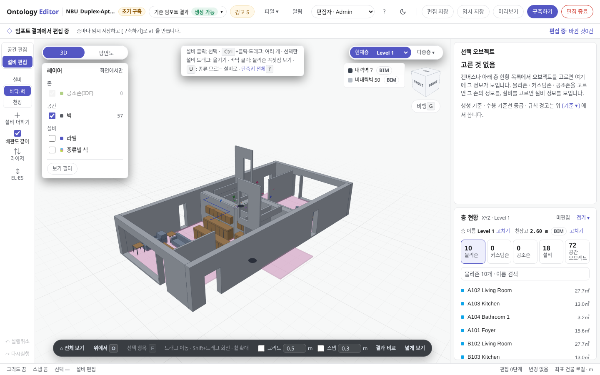
크게 보기- 모드 배지초기 구축(최초 생성 전) · 운영 편집(v1 구축 후) · 보기 전용 중 현재 작업 모드를 나타냅니다.
- 기준 · 경고현재 파일의 데이터 등급, 불러올 때 제외된 항목, 완전성 검사 경고를 확인합니다(3·4단계).
- 편집 레일공간 편집(물리존·벽·문·창)과 설비 편집(M) 도구를 전환합니다.
- 3D · 평면도뷰포트 시점을 3D와 2D 평면도로 전환합니다(Shift+V).
- 현재 층화면에 표시하고 편집할 층을 선택합니다.
- 선택 오브젝트3D 뷰포트나 오른쪽 목록에서 선택한 공간·설비의 상세 속성이 표시됩니다.
- 층 현황현재 층에 포함된 물리존·설비 개수와 목록입니다. 상단 탭 숫자를 클릭하면 목록이 전환됩니다.
- 구축하기검토와 편집을 마친 뒤 서버에 초기 온톨로지(v1)를 생성합니다(12단계).
이 파일의 데이터 등급 확인하기
상단 바의 [기준 ▾]를 클릭하면 기준 · 검증 패널이 열립니다. 맨 위의 등급 칩은 0단계에서 본 등급 사다리의 실제 측정값입니다. 이 예시 파일은 설비 40대가 모두 물리존과 연결망에 포함되었지만, 흐름 방향이 확인된 기기는 26대 중 0대입니다. 포트 연결 485개 중 190개에는 방향 정보가 있으나, 피팅·덕트 포트가 양방향(SOURCEANDSINK)으로 작성되어 흐름 경로가 중간에서 끊기기 때문입니다. 따라서 구축 필수 조건인 게이트(등급 0~3)는 통과했지만 목표선(등급 4)에는 도달하지 못한 상태입니다.
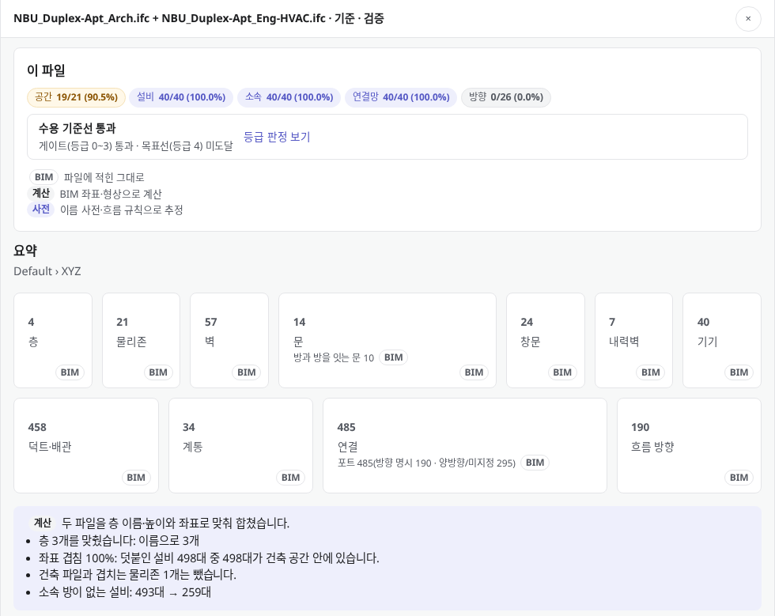
- 등급 칩공간 · 설비 · 소속 · 연결망 · 방향 5개 항목의 충족 현황을 "충족 수/전체"로 보여 줍니다.
- 수용 기준선게이트(등급 0~3)를 통과해야 [구축하기] 버튼이 활성화됩니다. 미달 시 부족한 항목이 이곳에 표시됩니다.
- 요약추출된 층·물리존·벽·문·설비·연결 개수와 각 데이터의 출처(BIM·계산·사전)입니다.
- 병합 결과건축·설비 두 파일을 층 이름·높이·좌표 기준으로 정렬해 병합한 결과입니다.
경고와 완전성 검사 확인하기
상단 바의 [경고]를 클릭하면 같은 패널의 경고 및 검사 영역이 바로 열립니다. 경고 앞의 분류 배지는 무엇이 누락되었고 누가 조치해야 하는지를 나타내며, 아래의 완전성 검사는 DT 운영에 필요한 필수 연결·속성 규칙의 위반 건수를 항목별로 보여 줍니다.
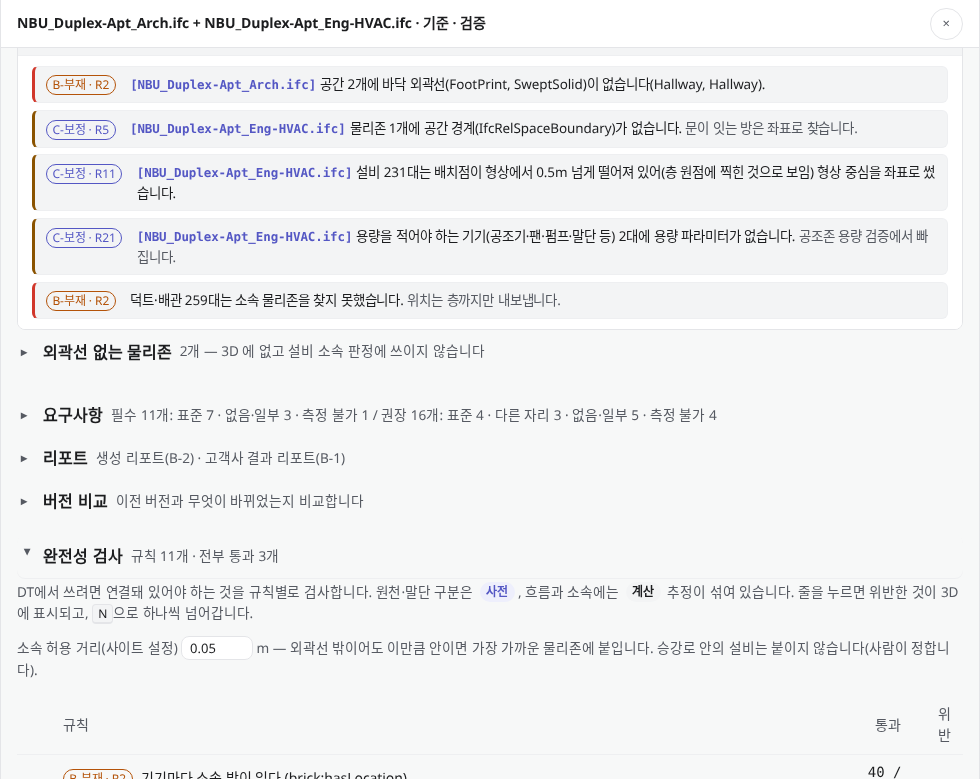
- 경고"공간 2개에 바닥 외곽선이 없습니다"처럼 파일을 불러올 때 제외된 항목입니다. 원인 파일 이름이 앞에 표시됩니다.
- 외곽선 없는 물리존바닥 외곽선이 없으면 3D 화면에 표시되지 않고 설비 소속 판정에서도 제외됩니다. 공간 편집 모드에서 외곽선을 직접 그려 채울 수 있습니다.
- 완전성 검사규칙 항목을 클릭하면 위반 객체가 3D 화면에 강조 표시되며, N 키로 하나씩 순회하며 확인할 수 있습니다.
- 소속 허용 거리설비가 방 외곽선 밖에 놓여 있어도 이 거리 이내라면 가장 가까운 물리존에 배정합니다(7단계 원리 그림 참고).
R 번호 안내 · 배지 뒤의 R2·R11 등은 고객사 BIM 작성 기준의 요구사항 번호입니다. 같은 패널의 [요구사항] 탭에서 전체 항목별 판정을 확인할 수 있습니다.
바닥 외곽선이 왜 꼭 필요한가 · 물리존(IfcSpace)에 바닥 외곽선 폴리곤이 빠져 있으면 3D 공간이 생성되지 않을 뿐 아니라, 그 방 위에 놓인 설비(FCU 등)의 다림추가 받아 줄 바닥 판을 찾지 못해 소속 없음(층 직속)으로 빠집니다. 아래 모형에서 외곽선 누락 상태와 공간 편집 보정 후의 차이를 눌러 확인해 보세요.
편집 · 보정
공간과 설비를 선택해 위치·소속·이름을 보정하고 온톨로지 변환 결과를 확인합니다
5 ~ 10단계층을 선택하고 평면도로 보기
공간 경계를 확인하거나 다듬을 때는 위에서 내려다보는 평면도 시점이 편리합니다. 물리존은 BIM의 공간(IfcSpace)에서 생성되며, 바닥 외곽선이 있어야 화면에 표시되고 설비 소속 판정에 활용됩니다.
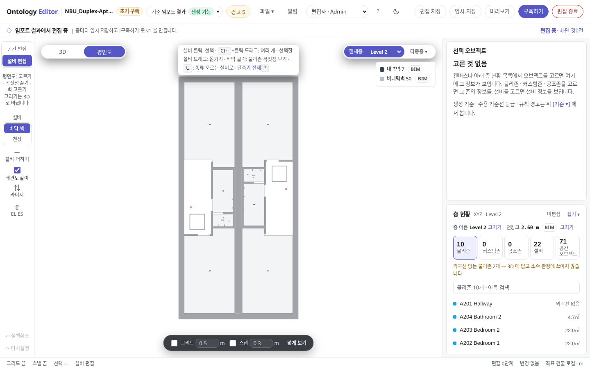
크게 보기- 평면도클릭하면 위에서 내려다보는 2D 평면 시점으로 전환되고, 다시 클릭하면 3D 시점으로 돌아갑니다.
- 현재 층작업 대상을
Level 2로 전환한 상태입니다. - 물리존 목록해당 층의 물리존(방) 목록입니다. 이름을 클릭하면 해당 공간이 선택됩니다.
3D 시점과 2D 평면도는 어떻게 다른가 · 3D 시점은 층간 설비 배치와 수직 배관을 입체로 파악할 때 유리하고, 평면도(Shift+V)는 선택한 층 높이에 수평 절단면(Section Cut)을 내려 원근 왜곡 없이 방 외곽선과 벽·문 경계를 정밀하게 편집할 때 씁니다.
설비를 선택해 값의 출처 확인하기
오른쪽 층 현황에서 설비 목록을 열고 보일러를 선택했습니다. 종류·계통·소속 옆에 붙은 작은 배지는 각 값이 어디서 왔는지(출처)를 나타냅니다. 보정 대상을 검토할 때 이 출처 배지부터 확인하면 편리합니다.
- 선택한 설비목록에서 설비를 선택하면 3D 화면에서 해당 설비의 외곽선이 강조 표시됩니다.
- 종류 · 사전원본 설비 이름을 사전 규칙으로 분석해 "보일러"로 분류했습니다.
- 계통 · BIM원본 BIM 파일에 정의된 계통 정보를 그대로 가져온 값입니다.
- 소속 · 계산설비 좌표를 기준으로 에디터가 계산해 배정한 물리존입니다(7단계).
- 색 범례선택한 설비와 연결된 경로를 상류·하류·방향 모름 색상으로 구분해 표시합니다(10단계).
네 가지 출처 중 무엇이 우선하나 · 같은 속성이라도 여러 출처가 경합할 때는 사람(수동 편집) > BIM(파일 원본) > 계산·사전(자동 보정) 순서로 채택됩니다. 아래 계전기 모형에서 각 출처 블록을 눌러 어떤 규칙으로 값이 채워지고 TTL에 남는지 확인해 보세요.
설비를 이동하면 소속 물리존이 즉시 갱신된다
설비 편집 모드에서 선택한 설비를 마우스로 드래그하거나 방향키로 이동합니다. 보일러를 ↓ 키로 몇 칸 이동하자 소속 물리존이 Utility에서 Bedroom 1로 즉시 바뀌었습니다. 별도의 재계산 버튼을 누를 필요가 없습니다.
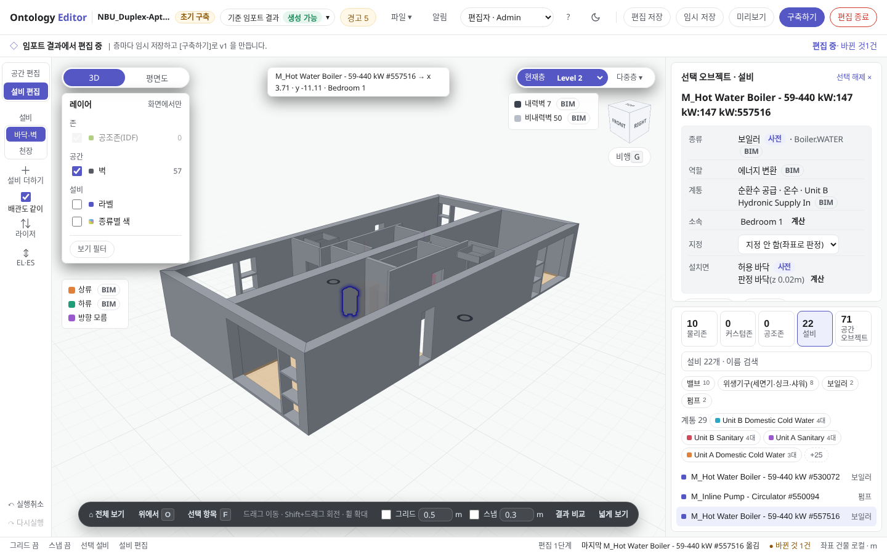
가운데 구분선 왼쪽이 이동 전, 오른쪽이 이동 후 화면입니다. 슬라이더를 오른쪽 패널 위로 움직여 보면 소속 항목이 Utility에서 Bedroom 1로 바뀌는 것을 비교할 수 있습니다.
- 소속 자동 갱신이동한 새 좌표에서 다시 판정된 물리존입니다.
- 변경 건수저장 전까지 누적된 편집 건수입니다. 클릭하면 변경 내역 목록으로 이동합니다.
- 최근 편집 내역방금 수행한 작업이 하단 상태 바에 표시됩니다. Ctrl+Z로 되돌릴 수 있습니다.
어디에 반영되나 · 변경된 좌표는 층별 GeoJSON의 설비 점(Point)이 되고, 바뀐 소속은 TTL의 brick:hasLocation 구문이 됩니다. 서버에 저장하기 전까지는 현재 브라우저에 자동 저장됩니다.
소속 판정 원리 · 에디터는 설비 위치의 수평 좌표(x, y)를 같은 층 물리존들의 바닥 외곽선과 비교합니다. 외곽선 안에 포함되면 해당 물리존(겹치면 면적이 가장 작은 물리존), 외곽선 밖이면 허용 거리 안의 가장 가까운 물리존으로 배정하고, 그마저 없으면 '소속 없음'으로 처리합니다. 아래 그림에서 설비를 직접 드래그하거나 다이얼로 허용 거리를 조절해 보세요.
공간(물리존) 이름 수정하기
왼쪽 편집 레일에서 [공간 편집]으로 전환한 뒤 물리존을 선택해 공간명을 수정합니다. 예시처럼 Bedroom 2를 침실 2로 고치고 Enter를 누르면 오른쪽 목록과 하단 상태 바가 함께 갱신됩니다.
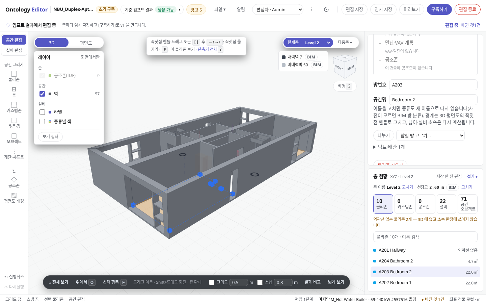
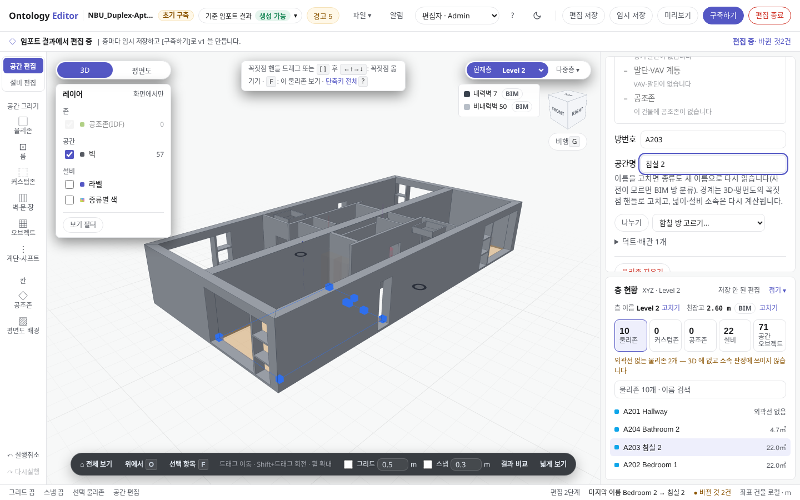
- 공간 편집물리존·벽·문·창을 편집하는 모드입니다.
- 공간명 입력새 이름을 입력하고 Enter 키를 눌러 확정합니다.
- 물리존 목록변경된 이름이 목록에 즉시 반영됩니다.
- 최근 편집 내역하단 상태 바에 이전 이름과 변경된 이름이 남습니다.
어디에 반영되나 · 원본 BIM 파일은 변경하지 않습니다. 수정한 이름은 TTL의 rdfs:label "침실 2" 구문으로 출력됩니다. 다음 단계에서 실제 변환 결과를 바로 확인합니다.
결과 비교로 출력될 TTL·GeoJSON 확인하기
오른쪽 아래의 [결과 비교]를 클릭하면 3D 뷰포트 옆에 현재 모델을 변환한 TTL·GeoJSON 원문이 열립니다. 공간이나 설비를 선택하면 해당 항목이 TTL의 어느 블록과 GeoJSON의 어느 Feature로 출력되는지 바로 찾아 보여 줍니다.
- 결과 비교패널 오른쪽 위 [닫기] 버튼으로 닫을 수 있습니다.
- TTL · GeoJSONDT 플랫폼이 읽는 두 파일을 현재 편집 모델 기준으로 생성한 결과입니다.
- TTL 블록선택한 "침실 2"가
brick:Room블록으로 생성되고rdfs:label "침실 2"가 반영된 모습입니다.
왜 두 파일로 나누어 내보내고 어떻게 다시 만나나 · GeoJSON은 층별 2D/3D 기하 좌표(Polygon · Point · LineString)만 담고, Brick TTL은 의미·계층·흐름 관계(brick:hasLocation · brick:feeds)만 담습니다. 아래 커플러 모형에서 객체를 클릭해 동일한 공유 ID 하나로 양쪽 코드가 어떻게 1:1 결합되는지 확인해 보세요.
흐름 추적: 어디서 와서 어디로 보내나
설비를 선택하면 연결된 배관·덕트 경로가 흐름 방향에 따라 색상으로 구분됩니다. 하류(보내는 쪽)는 초록, 상류(받는 쪽)는 주황, 연결은 되어 있으나 방향을 알 수 없는 구간은 보라로 표시됩니다. 아래 화면은 ifc4Mep 샘플에서 냉수 밸브 하나를 선택한 모습이며, 오른쪽 패널 첫 줄에 "위생기구 8대로 보냅니다"가 표시됩니다.
- 보내는 곳(하류 기기)중간 덕트·배관을 건너뛰어 이어지는 기기 간 관계이며, TTL의
brick:feeds로 출력됩니다. - 색 범례하류(초록)는 흐름 방향을 따라 도달한 구간, 상류(주황)는 역방향으로 추적한 구간입니다. 방향 모름(보라)은 형상 인접으로 추정한 연결이므로
brick:feeds로 출력되지 않습니다.
파일에 따른 차이 · Duplex HVAC 파일은 포트 연결의 39%에만 방향이 정의되어 있고, 중간의 양방향(SOURCEANDSINK) 포트에서 경로가 끊겨 기기까지 이어지는 방향이 0/26입니다(3단계 참고). 이처럼 포트 방향이 끊긴 계통은 규칙이 추정한 방향을 검토해 계통 단위로 확정해야 brick:feeds로 출력됩니다.
흐름 추적이 멈추는 원리 · 흐름 추적은 방향이 확인된 연결만 따라갑니다. 아래 그림에서 각 기기를 클릭해 보세요. 볼트로 체결된 플랜지는 BIM 포트 방향 연결이고, 민무늬 슬리브는 형상으로 추정한 연결(방향 미상)입니다.
구축 · 내보내기
반영 전에 변경 내역을 검증하고, 서버에 버전을 생성하거나 파일로 내려받습니다
11 ~ 15단계미리보기로 반영 전 변경 내역 확인하기
상단 바의 [미리보기]는 구축이나 반영을 실행하기 전에 무엇이 바뀌는지 요약해 보여 줍니다. 7단계에서 이동한 보일러가 '소속이 바뀔 설비' 목록에 올라와 있습니다. 미리보기는 확인 전용이므로 서버의 반영본은 변경되지 않습니다.
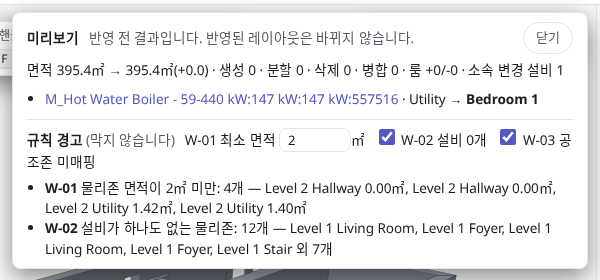
- 변경 요약전체 면적과 생성·분할·삭제·병합된 물리존 수, 소속이 변경된 설비 수를 집계합니다.
- 소속이 바뀔 설비'기존 물리존 → 변경 물리존' 내역입니다. 클릭하면 3D 화면에서 해당 설비를 선택합니다.
- 규칙 경고구축을 차단하지는 않는 참고 경고(최소 면적, 설비 없는 물리존, 공조존 미매핑)입니다. 판정 기준값도 이곳에서 조정할 수 있습니다.
구축하기로 초기 버전(v1) 생성하기
검토와 편집을 마쳤다면 [구축하기]를 누릅니다. 층마다 임시 저장된 내용을 모아 서버에 최초 반영본(v1)을 생성합니다. 아직 저장하지 않은 편집이 있다면 [임시 저장 후 구축]으로 한 번에 반영할 수 있습니다.
- 대상 층이번 구축에 포함되는 층 목록입니다.
- 생성 항목온톨로지(TTL) · 층별 GeoJSON · 3D 형상(GLB) · 편집 파일 · 공간 계층 · 검증 리포트가 서버에 함께 생성됩니다.
- 임시 저장 후 구축현재 화면의 미저장 편집까지 함께 저장한 뒤 즉시 구축을 실행합니다.
구축 이후: 운영 편집으로 버전 관리하기
초기 구축(v1)을 마치면 화면이 자동으로 운영 편집 모드로 전환됩니다. 이후 수정한 내용은 [반영하기]를 통해 층마다 DT에 반영하며, 반영할 때마다 새 버전(v2, v3…)이 서버에 기록됩니다.
- 운영 편집모드 배지가 운영 편집으로 바뀝니다.
- 기준 v1현재 편집의 출발점이 되는 서버 반영본 버전(v1)을 표시합니다.
- 반영하기[구축하기] 자리에 [반영하기] 버튼이 표시됩니다.
구축한 프로젝트를 다시 열 때는 층을 선택한다
이미 구축이 완료된 프로젝트를 시작 화면 목록에서 [열기]로 열면 건물별 층 목록이 나타납니다. 수정할 층의 [운영 편집]을 눌러 해당 층만 열며, 임시 저장본이 있는 층은 저장해 둔 상태부터 이어서 열립니다.
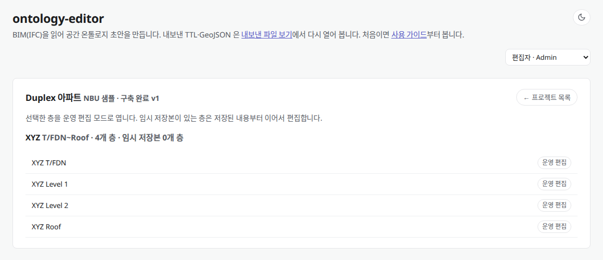
- 구축 완료 v1이 프로젝트의 최신 서버 반영본 버전입니다.
- 층 목록건물별로 포함된 층과 공간·설비 현황이 나열됩니다.
- 운영 편집선택한 층만 운영 편집 모드로 엽니다.
- 프로젝트 목록전체 프로젝트 목록 화면으로 돌아갑니다.
파일로 직접 내보내기
서버 반영과 별개로 내 PC에 결과 파일만 내려받을 때는 상단 바 [파일 ▾] 메뉴의 내보내기를 사용합니다. 이 예시에서는 ontology.ttl 파일 1개와 층별 기하 파일 4개(floor-T_FDN · floor-Level_1 · floor-Level_2 · floor-Roof.geojson)가 내려받아집니다.
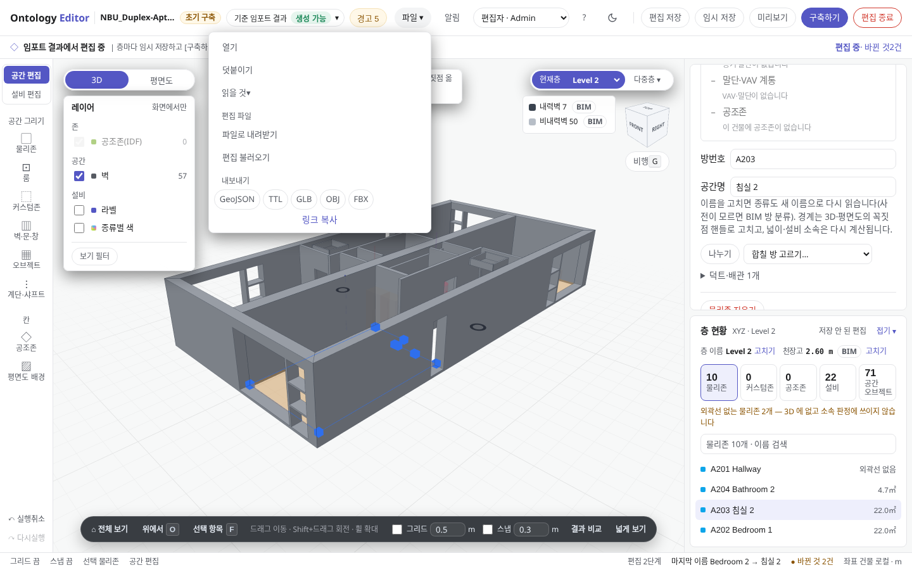
크게 보기- 파일 ▾새 파일 열기, 설비 파일 덧붙이기, 편집 파일(JSON) 저장·불러오기, 내보내기 메뉴가 모여 있습니다.
- GeoJSON기하 형상 파일입니다. 층마다 파일이 하나씩 생성되며, 브라우저가 지원하면 저장할 폴더를 선택합니다.
- TTL의미·관계(Brick) 파일입니다. 건물 전체가 파일 하나로 생성됩니다.
두 파일은 동일한 ID로 연결된다 · GeoJSON은 기하(좌표·외곽선)를, TTL은 의미와 관계를 담당합니다. 좌표는 TTL에 중복 기록하지 않고, 공간·설비마다 동일한 ID를 부여해 두 파일을 연결합니다. GLB·OBJ는 시각화용 3D 형상이며 두 온톨로지 파일을 대체하지 않습니다.
내보낸 파일을 뷰어에서 다시 열어 검증하기
내보낸 파일 보기(뷰어) ↗에 내려받은 TTL·GeoJSON을 함께 넣으면, DT 플랫폼 파서와 동일한 규칙으로 다시 읽어 실제 출력 내용과 ID 연결 정합성을 검사합니다(파일은 브라우저 안에서만 처리됩니다). 이 예시는 엔티티 100개, Feature 679개이며 5가지 정합성 검사 모두 오류 0건입니다.
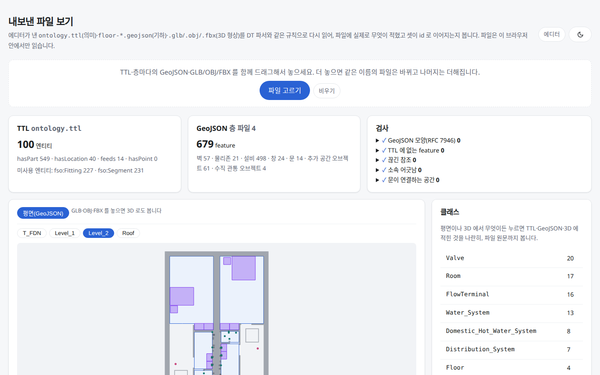
크게 보기- TTL 요약전체 엔티티 수와 관계별 구문 수(
hasPart·hasLocation·feeds·hasPoint)입니다. - GeoJSON 요약불러온 층 파일 수와 Feature 종류별 개수입니다.
- 검사GeoJSON 폴리곤 형상, TTL 미정의 Feature, 끊긴 참조, 소속 불일치, 문이 연결하는 공간 오류를 검사합니다.
- 층 평면층을 선택해 GeoJSON 평면을 확인하고, 객체를 클릭하면 해당 항목의 TTL·GeoJSON 원문을 나란히 비교합니다.
뷰어의 5가지 검사는 무엇을 확인하나 · 내보낸 파일 보기(viewer.html)는 DT 플랫폼 파서와 동일한 규칙으로 ① 폴리곤 닫힘·넓이 ② TTL 미정의 Feature ③ 끊긴 참조(Dangling ID) ④ 소속 어긋남 ⑤ 문이 잇는 공간 유효성 5가지 게이트를 점검합니다. 아래 핀 게이트를 하나씩 눌러 보세요.
참고 · 문제 해결
저장 방식 비교, 자주 막히는 상황별 해결법, 주요 도메인 용어를 정리했습니다
레퍼런스저장 버튼은 무엇이 다른가
편집 내용은 저장 방식에 따라 네 곳 중 한 곳에 기록됩니다. 공유 범위와 DT 플랫폼 반영 여부에 따라 알맞은 방식을 선택하세요.
| 구분 | 저장 위치 | 공유 범위 | DT 플랫폼 반영 여부 |
|---|---|---|---|
| 자동 저장 | 현재 브라우저 (로컬) | 본인 브라우저에서만 유지 | 미반영 · 같은 파일을 다시 열면 이어서 작업할지 묻습니다 |
| 임시 저장 | 서버 (층별 1개) | 해당 층을 여는 모든 작업자 | 미반영 · 다시 임시 저장하면 최신 내용으로 덮어씁니다 |
| 편집 저장 Ctrl+S | 서버 (로컬 단독 파일은 JSON 내려받기) | 해당 프로젝트를 여는 모든 작업자 | 미반영 · 편집 이력 보존용 |
| 구축하기 · 반영하기 | 서버 반영본 (v1, v2 …) | DT 플랫폼 및 전체 사용자 | 반영됨 · TTL · 층별 GeoJSON · GLB · 검증 리포트 생성 |
어디에 저장되고 언제 DT로 나가나 · 로컬 자동 저장과 서버 임시 저장은 작업 중인 초안을 보관하는 단계이고, 실제로 DT 플랫폼이 읽는 정식 버전(v1, v2…)은 [구축하기]와 [반영하기]를 실행할 때 서버 볼트 스태커에 적재됩니다.
자주 막히는 상황과 해결 방법
설비에 "소속 없음"이 표시됩니다
설비 위치가 어느 물리존의 바닥 외곽선 안에도 들어오지 않고, 소속 허용 거리 이내에도 물리존이 없다는 뜻입니다. 이 경우 TTL에는 물리존 대신 해당 층이 brick:hasLocation으로 출력됩니다.
해결 방법: 설비를 물리존 안으로 이동하거나(7단계), 외곽선 없는 물리존이 있다면 공간 편집에서 외곽선을 그리거나(4단계), 오른쪽 설비 패널의 [지정]에서 물리존을 직접 선택합니다. 단, 이미 다른 물리존 외곽선 내부에 놓인 설비는 좌표 판정이 우선 적용되므로 수동 지정할 수 없습니다.
설비를 선택해도 상류·하류 경로가 색상으로 칠해지지 않습니다
BIM 포트에 흐름 방향(SOURCE·SINK)이 없거나, 중간 피팅·덕트가 양방향(SOURCEANDSINK) 포트로 되어 있어 흐름 추적이 끊긴 경우입니다(3단계 등급 칩의 "방향 0/n"). 이때는 연결망이 보라색(방향 모름)으로만 표시됩니다.
해결 방법: 에디터 규칙이 추정한 방향을 검토한 뒤 계통 단위로 방향을 확정하면 상·하류 색상이 표시되고 brick:feeds로 출력됩니다.
[구축하기] 버튼 대신 "구축 막힘"이 표시됩니다
수용 기준선 게이트(등급 0~3)에 미달했거나, 생성 전 검증의 차단 항목(같은 층 내 방 번호 중복, 물리존이 하나도 없는 층 등)이 남아 있는 경우입니다. 해당 배지를 클릭하면 기준 · 검증 패널이 열리며 구체적인 차단 사유를 확인할 수 있습니다(층 이름이 비어 있어도 등급 0 기준에 미달합니다).
목록에는 있는 방이 3D 화면에 보이지 않습니다
바닥 외곽선(폴리곤)이 없는 물리존입니다. 기준 · 검증 패널의 [외곽선 없는 물리존]에서 목록을 확인하고, 공간 편집 모드에서 외곽선을 직접 그리면 3D 화면 표시와 설비 소속 판정에 반영됩니다.
편집 도중 브라우저 창을 실수로 닫았습니다
편집 내역은 브라우저에 실시간 자동 저장됩니다. 같은 파일을 다시 열면 상단 바에 이전 작업을 이어서 불러올지 묻는 안내가 표시되며, [예]를 누르면 마지막 편집 상태로 복구됩니다. 다른 작업자와 이어서 작업하려면 [임시 저장]을 사용하세요.
주요 용어 사전
헷갈리기 쉬운 공간·설비 용어 한눈에 비교하기 · 같은 건물 바닥 위에서도 건축 BIM에서 온 물리존(IfcSpace), 사람이 에디터에서 나눈 룸(수동 분할), 에너지 시뮬레이션(IDF)에서 온 공조존(HVAC Zone), 그리고 공기와 물을 보내는 계통·포트는 서로 다른 층위의 개념입니다. 아래 분해 모형에서 각 계층을 눌러 차이를 비교해 보세요.
- 물리존
- 에디터가 다루는 기본 공간 구획입니다. BIM 파일을 불러오면
IfcSpace하나가 물리존 하나가 되며, DT 플랫폼에서 이상 알림 위치와 공간 탐색의 기준 단위로 쓰입니다. - 룸
- BIM 파일을 불러올 때 자동 생성되지 않고, 사용자가 물리존 내부를 직접 분할해 그린 하위 편집 단위입니다.
- 공조존
- 공조 설비가 담당하는 열역학적 제어 구역입니다. 물리존과 별개이며 에너지 시뮬레이션 파일(IDF)의 Zone에서 읽어 옵니다.
- 계통
- 공조기 → 덕트·배관 → 말단 토출구 → 담당 공간으로 이어지는 설비 네트워크 묶음입니다.
- 포트
- 설비·덕트·배관 요소에 정의된 연결 지점(
IfcDistributionPort)입니다. 흐름 방향(SOURCE·SINK)을 담는 유일한 BIM 표준 근거입니다. - 소속
- 설비가 배치된 물리존입니다. TTL에서는
brick:hasLocation관계로 출력됩니다. - 소속 허용 거리
- 설비가 물리존 외곽선 밖에 있을 때, 이 거리 이내의 가장 가까운 물리존에 자동 배정하는 기준값입니다. 벽면 스위치처럼 기준점이 외곽선 경계에 찍히는 설비를 위해 두며, 기본값은
0.05 m입니다. - 등급 · 수용 기준선
- BIM 파일로 온톨로지를 어디까지 구축할 수 있는지 0~5단계로 판정한 지표입니다. 필수 기준선인 게이트(등급 0~3)를 통과해야 구축할 수 있습니다.
- 초기 구축 · 운영 편집
- 서버에 반영본이 없는 상태에서 최초 버전(v1)을 만드는 모드가 초기 구축이고, 이미 구축된 층을 불러와 수정·배포하는 모드가 운영 편집입니다.
- 구축 · 반영
- 서버에 정식 온톨로지 버전을 생성하는 작업입니다. 최초 생성을 구축(v1), 이후 업데이트를 반영(v2, v3…)이라고 부릅니다.
- 임시 저장본
- 층마다 하나씩 서버에 저장해 두는 작업 중 상태입니다. 아직 DT 플랫폼에는 반영되지 않습니다.
- TTL (Brick)
- 공간·설비·계통의 의미와 연결 관계를 Brick 스키마 형식으로 기록한 텍스트 파일입니다. 기하 좌표는 포함하지 않습니다.
- GeoJSON
- 층마다 하나씩 생성되며, 공간·벽·문·창·설비의 2D/3D 기하 형상을 담는 파일입니다. TTL 엔티티와 동일한 ID로 연결됩니다.